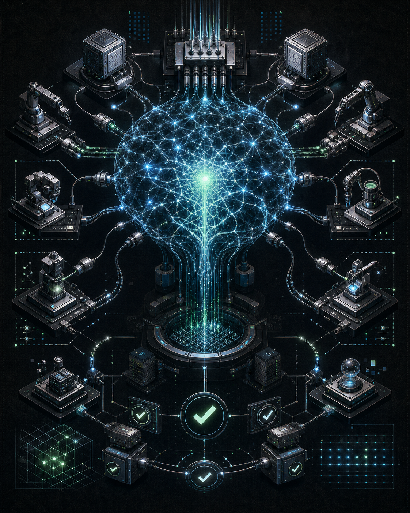

01
Spec 比 prompt 更重要
工程師要主導需求、資料模型、身份邊界、權限與失敗模式。agent 可以填細節，但不應替你決定系統的基本不變量。
Andrej Karpathy 在這場訪談裡把 AI coding 的興奮感拉回工程現場：agent 已經能讓速度暴增，但真正的分水嶺，是誰能在速度之上維持品質、驗證、架構與理解。
觀看原始影片Karpathy 的關鍵訊息不是「工程師要學會提示詞」，而是更根本：LLM 正在變成一種新電腦，而軟體工程師的工作，正在從寫每一行指令，移向設計可被 agent 執行、驗證與修正的系統條件。
訪談從一個反直覺的坦白開始：Karpathy 說自己從未像現在這樣感覺落後於程式設計。這句話不是謙虛，也不是恐慌，而是對工具轉折點的描述。他回憶某個時間點後，模型輸出的程式碼片段開始「直接可用」，需要修正的次數快速下降，信任感於是上升，side project 也像失控一樣增加。
這是許多工程師熟悉的感覺：去年你還把 AI coding 當成 ChatGPT 式輔助，今年它突然變成可以連續推進工作的 agentic workflow。差別不在單次補全，而在它能否在上下文、工具、檔案、錯誤與迭代之間維持一段 coherent loop。

Karpathy 延續他對 software 1.0、2.0、3.0 的分法：1.0 是明確規則與程式碼；2.0 是資料集、目標函數與神經網路權重；3.0 則把 LLM 視為可程式化的電腦，工程師透過 prompt 與 context window 操作這台新的解譯器。
他用安裝工具與 MenuGen 的例子說明這件事。舊世界會寫越來越複雜的 bash script 來適配不同平台；新世界則可能只需要一段給 agent 的操作說明，讓 agent 觀察環境、執行、debug。更激進的是，有些 app 在 software 3.0 裡根本不該存在，因為影像、文字與 UI 的重組可以直接由模型完成。
對 AI SWE 而言，這不是「程式碼不重要」；而是程式碼的邊界正在改變。工程師要重新判斷哪些部分應該是 deterministic software，哪些部分應該交給 neural computation，哪些部分必須用測試與沙盒把模型的自由度收回來。
Vibe coding 提高所有人的下限；agentic engineering 決定專業團隊的上限。
Karpathy 的分野很清楚：vibe coding 讓任何人都能做出東西；agentic engineering 則是在不犧牲安全、設計與維護性的前提下，協調一群強大但尖刺狀、會犯錯、帶隨機性的 agent。
Karpathy 把 agentic engineering 說成一種工程紀律，而不是一套酷炫工具清單。它的核心不是「讓 agent 寫更多碼」，而是設計一個流程，讓 agent 在可監督、可驗證、可回滾的範圍內工作。這也是為什麼他強調，vibe coding 不能成為引入漏洞的藉口；軟體責任仍在工程師身上。
工程師要主導需求、資料模型、身份邊界、權限與失敗模式。agent 可以填細節，但不應替你決定系統的基本不變量。
LLM 在數學、程式碼與可獎勵的任務上進步最快，因為 frontier labs 可以對這些領域做大規模 RL。你的產品若有明確 verifier，就更容易被 agent 化。
模型可能交出能跑但臃腫、重複、抽象脆弱的 code。工程師要看見記憶體、資料一致性、身份對應與部署成本這些模型容易忽略的結構。
若要找 AI-native engineer，傳統 puzzle 不足以測試能力。更合理的評估是給大型專案，看候選人如何用 agent 建構、加固、部署並抵抗攻擊。
Karpathy 反覆談到模型能力的鋸齒狀分布：它可以重構大型 codebase、找零日漏洞，卻可能在日常常識題上做出荒謬判斷。這不是小瑕疵，而是部署策略的核心事實。LLM 不是均勻變聰明的工程師，它是被資料分布、RL 獎勵與 labs 關注方向塑形的能力地形。
這對產品團隊有直接含義：不能只問模型「平均表現」如何，而要知道你的任務落在哪些 circuit 裡。若你的任務屬於 labs 已密集訓練且可驗證的區域，agent 會飛；若落在分布外，你可能需要自己的資料、fine-tuning、eval harness 或更保守的人機協作。
Karpathy 對現有開發環境的不滿很具體：文件仍主要寫給人，雲端服務仍要求人進 dashboard、點選設定、配置 DNS、串接多個服務。agentic future 需要的是 agent-native infrastructure：服務、文件、權限與部署流程都要能被 agent 理解、調用、驗證。
這會改變開發者平台的競爭焦點。未來的好工具不只是 UI 好用，而是提供清楚的 machine-legible surface：有哪些 sensors 可以讀取世界狀態？有哪些 actuators 可以安全行動？哪些操作有權限邊界？哪些結果能被 verifier 判斷？
訪談最後回到教育與學習。Karpathy 提到一句讓他反覆思考的話：你可以外包思考，但不能外包理解。這句話也許是整場訪談對工程師最直接的提醒。當 agent 能處理更多細節，人類更像 director，但 director 若不理解系統，就無法提出正確任務，也無法判斷結果是否值得信任。
所以 AI SWE 的深度學習沒有過時，只是焦點變了。你不必記住每個 API 的 `axis` 或 `dim`，但你仍要理解 tensor view、資料複製、身份模型、可靠性邊界、測試策略與架構後果。細節可以交給 agent；理解仍是你指揮 agent 的唯一根基。
原始影片：Andrej Karpathy: From Vibe Coding to Agentic Engineering w/ Stephanie Zhan，Sequoia Capital，YouTube。
內容依 2026-06-11 取得的 YouTube 英文字幕與 oEmbed metadata 整理；字幕檔已保留於交付資料夾，可能存在少量自動字幕辨識誤差。
視覺素材為本摘要製作用 AI 生成之 editorial images，已隨 HTML 一併放入交付資料夾。